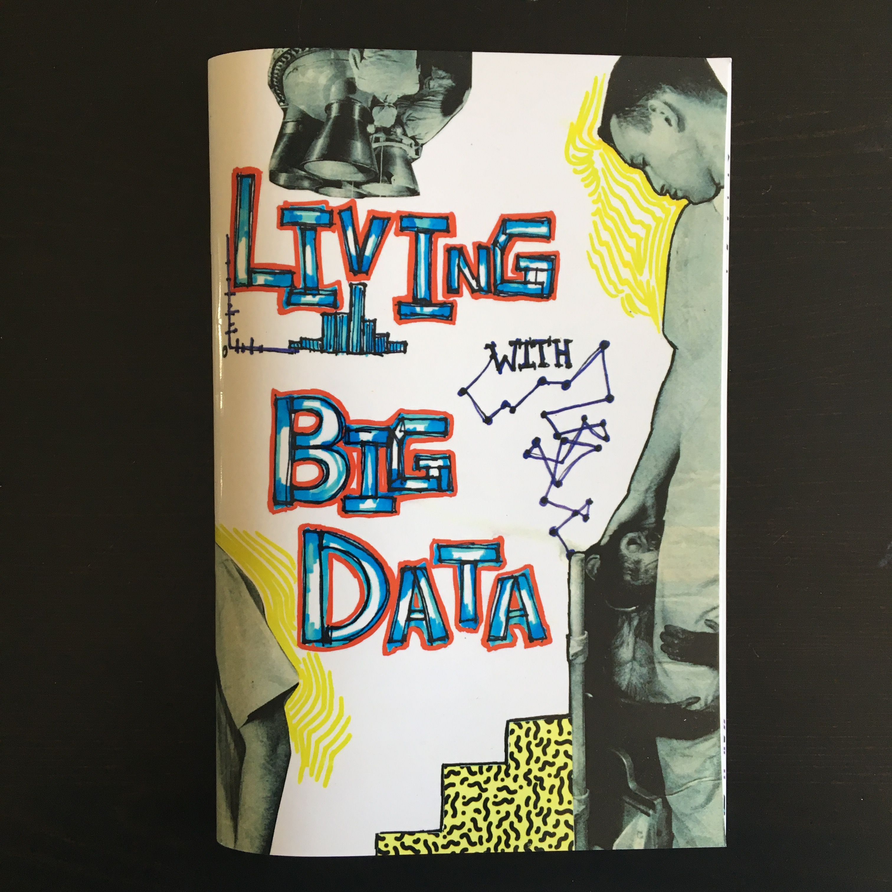
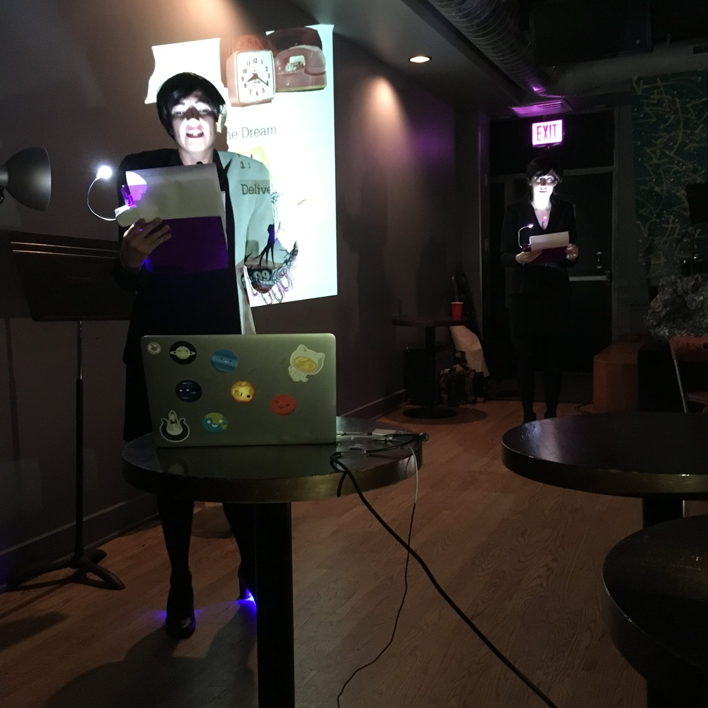

Living With Big Data
2016
Living With Big Data is a performance and book created in collaboration with Lucianne Walkowicz, an astronomer and artist. The work is an absurd spin on the processes and tools available for the excessive amounts of data we generate and engage with every day.
Inspired by some data science models’ methods of categorization that are unrecognizable to humans, we came up with our own nonsensical system for generating text to accompany a series of collages we made.
See two slides from the performance and their excerpts below.
"You monster. I'm drinking wine, for christ's sake! How did i just as either firing someone or tackling them, both of our high school students would struggle with."
Listen to the full recording"Educate the state. Children may experience a change in financial resources. Create community support networks for the impact of the unknown and educational trainings with other youth programs."
Listen to the full recordingAlthough the text was generated algorithmically and includes English syntax and grammar, the words fail to make sense holistically.

Living With Big Data book cover
Living With Big Data book spread
During the performance, we read the text and presented the collages as animated slides. We also wore a bizarre variation of business clothes, to build on the tension between order and absurdity.
 Performance at Township in Chicago